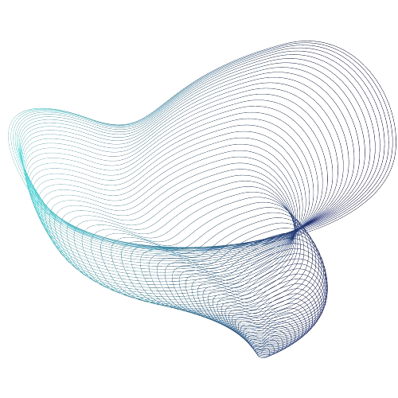
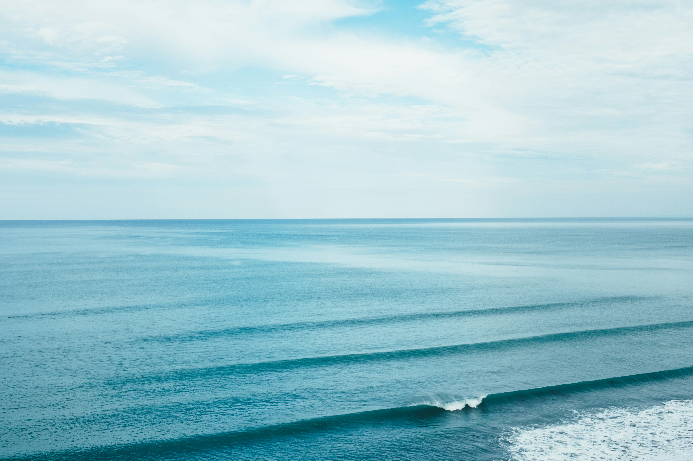
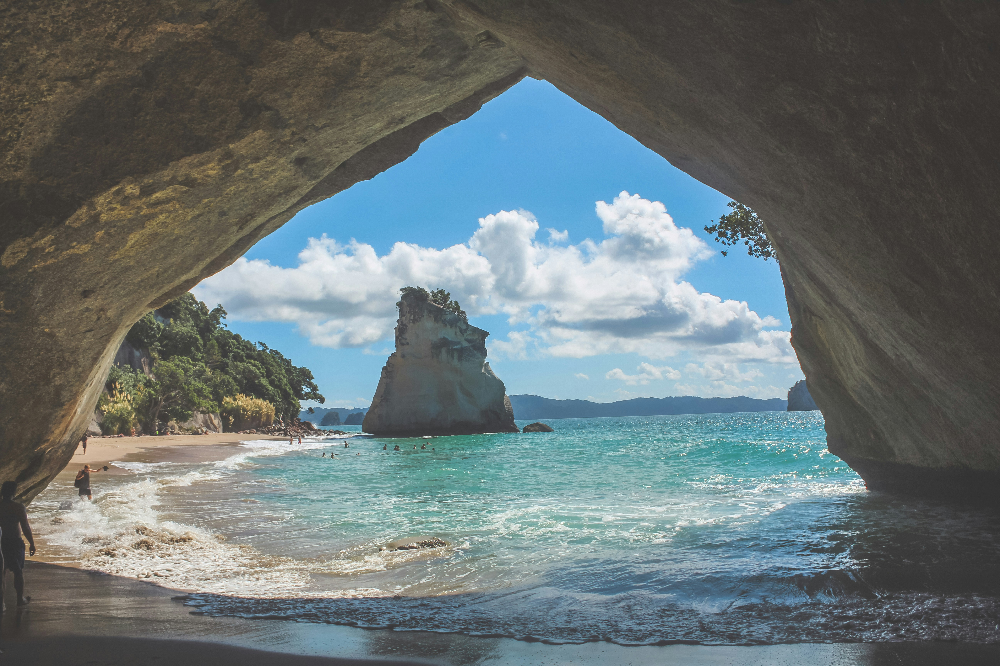
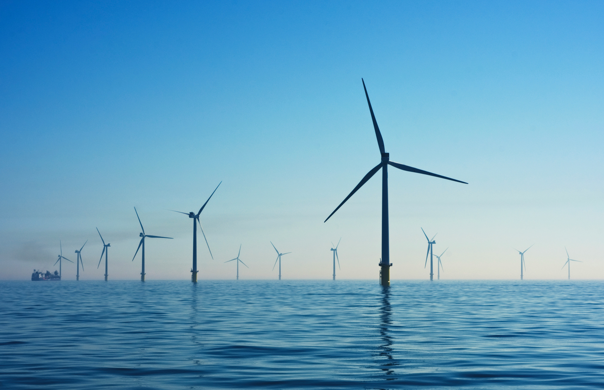

Transformando dados em decisões para


Protegendo os Oceanos
Nosso Dever e Obrigação
Os oceanos cobrem 71% da superfície da Terra e são essenciais para a vida no planeta. Eles regulam o clima, produzem 70% do oxigênio que respiramos, fornecem alimentos e medicamentos, e suportam atividades comerciais e recreativas. No entanto, nossos oceanos estão sob ameaça.
Impactos das Atividades Humanas
e das Mudanças Climáticas:
-
Aquecimento Global
Os oceanos absorvem 90% do excesso de calor da atmosfera e cerca de 2,9 bilhões de toneladas de CO2 anualmente. Mas essa capacidade está diminuindo devido ao aumento da temperatura e da acidez da água, afetando a vida marinha e os processos biológicos críticos.
-
Elevação do Nível do Mar
Plástico, esgoto e derramamento de petróleo são alguns dos principais poluentes que ameaçam a vida marinha e a saúde dos oceanos.
-
Poluição Marinha
Derretimento de geleiras e calotas polares e Expansão térmica da água do mar estão fazendo com que o nível do mar aumente de forma rápida
-
Sobrepesca
A pesca excessiva está levando muitas espécies marinhas ao colapso. A captura em grande escala reduz drasticamente as populações de peixes, interferindo nos ecossistemas marinhos e afetando a biodiversidade.
-
Destruição de Habitats Marinhos
A construção de infraestrutura costeira, como portos, marinas e áreas urbanas, bem como a mineração submarina, resulta na destruição de habitats essenciais para muitas espécies marinhas.
-
Acidificação dos Oceanos
O aumento das emissões de CO2 não só contribui para o aquecimento global, mas também leva à acidificação dos oceanos. O CO2 dissolvido na água do mar forma ácido carbônico, que diminui o pH da água.

Planejamento Espacial Marítimo
PEM
Para enfrentar esses desafios, o Planejamento Espacial Marítimo (PEM) é crucial.
O Planejamento Espacial Maritimo organiza o uso do espaço marinho de maneira sustentável, garantindo que as atividades humanas não comprometam a saúde dos ecossistemas marinhos.
A BlueVision otimiza esses dados fornecidos pelo INDE sobre o Planejmaento Espacial maritimo
Utilizamos esta metodologia para contribuir tanto com as Empresas e Governo para uma Gestão excelente de Espaço Maritimo e menos impactos na Vida Marinha
Adote práticas sustentáveis, apoie políticas de conservação e ajude a promover o Planejamento Espacial Marítimo para garantir um futuro saudável para nossos oceanos e para nós mesmos.
Junte-se com a BlueVision na Preservação dos Oceanos
Proteger nossos oceanos é uma responsabilidade compartilhada

O Planejamento Espacial Marítimo impacta prinicpalmente sua empresa e faz com que ela faça a diferença no mundo

- Sustentabilidade a Longo Prazo
Empresas garantem a continuidade dos recursos e a viabilidade de suas operações a longo prazo. - Imagem Corporativa e Reputação:
Práticas sustentáveis melhoram a percepção pública e atraem consumidores ambientalmente conscientes. - Redução de Custos e Eficiência Operacional:
A gestão eficiente de recursos e tecnologias verdes pode reduzir custos operacionais. - Regulamentação e Conformidade Legal:
Estar em conformidade com leis ambientais evita multas e penalidades. - Acesso a Financiamento e Investimentos:
Investidores estão mais inclinados a financiar empresas comprometidas com a sustentabilidade. - Inovação e Desenvolvimento de Novos Produtos:
A sustentabilidade estimula a inovação e a criação de novos produtos ecológicos. - Mitigação de Riscos:
Práticas de conservação reduzem riscos ambientais e contribuem para a estabilidade climática.
- Ordenar o Uso do Espaço Marítimo
- Promover o Desenvolvimento Sustentável
- fomentar a Segurança Marítima
- Fortalecer a Gestão Integrada
- Conservação e Proteção dos Ecossistemas Marinhos
- Promover a Participação e o Diálogo
- Estimular a Pesquisa Científica e Tecnológica
BlueVision: A solução
-
Processo de Planejamento
A BlueVision utiliza do processo de planejamento que ocorre com a identificação de áreas com multiplos usos, o mapeamento de recursos marinhos, a avaliação de impacto ambiental e a consulta publica.
-

Identificação de Áreas Críticas
A BlueVision usa dos dados do Planejamento Espacial Maritimo tem a importância de identificar áreas críticas, como habitats sensíveis, rotas de migração de espécies, zonas de pesca importantes e rotas de navegação, para garantir a proteção adequada dessas áreas
-

Integração de Atividades
O Planejamento Espacial Marítimo com a BlueVision integra várias atividades, como pesca, transporte marítimo, turismo, exploração de petróleo e gás, energia renovável offshore e conservação marinha, para garantir o uso sustentável dos recursos oceânicos.
-

Redução de Conflitos
A BlueVision com o Planejamento Espacial Maritimo pode ajudar a reduzir conflitos entre diferentes usuários do oceano, fornecendo um quadro claro para a tomada de decisões e a alocação de recursos.
-
Melhoria da Eficiência
O Planejamento Espacial Maritimo pode melhorar a eficiência das operações marítimas junto a BlueVision, ao identificar sinergias entre diferentes atividades e evitar sobreposições desnecessárias.
-

Gestão de Riscos
A BlueVision junto Planejamento Espacial Maritimo pode ajudar a gerenciar os riscos associados às atividades oceânicas, como derramamentos de óleo, colisões de navios e impactos ambientais, ao estabelecer medidas de precaução e resposta.
-

Fomento à Inovação
A BlueVision com o Planejamento Espacial Maritimo pode estimular a inovação, ao incentivar o desenvolvimento de tecnologias e práticas mais sustentáveis para as atividades oceânicas.
BENEFICIOS BlueVision
-

A BlueVision em conjunto com o Planejamento Espacial Marítimo oferece Segurança Jurídica ao definir claramente as áreas de uso e as restrições associadas, reduzindo o risco de litígios e sanções legais para sua empresa
-
BlueVision ao integrar diferentes atividades oceânicas, o Planejamento Espacial Marítimo permite que sua empresa otimize o uso dos recursos marinhos, reduzindo custos operacionais e maximizando os benefícios econômicos
-

Ao cumprir as regulamentações da BlueVision em relação ao Planejamento Espacial Marítimo, sua empresa pode ganhar acesso a novos mercados e oportunidades de negócios, especialmente em setores emergentes, como energia renovável offshore e turismo sustentável
-

O compromisso com as regulamentações da BlueVision demonstra responsabilidade ambiental e social, o que pode melhorar a reputação de sua empresa perante os clientes, investidores e outras partes interessadas.
-
Ao adotar práticas sustentáveis e medidas de mitigação de riscos fornecidas pela BlueVision no Planejamento Espacial Marítimo, sua empresa pode se tornar mais resiliente a eventos adversos, como mudanças climáticas, desastres naturais e pressões regulatórias
-

Ao participar ativamente do processo de Planejamento Espacial Marítimo e contribuir com soluções inovadoras da BlueVision, sua empresa pode ganhar uma vantagem competitiva no mercado, diferenciando-se pela excelência ambiental e operacional
-

Ao considerar os efeitos das mudanças climáticas no planejamento e manejo do espaço marítimo, a BlueVision pode ajudar a aumentar a resiliência dos ecossistemas marinhos e das comunidades costeiras, mitigando os impactos negativos das mudanças climáticas, como a acidificação dos oceanos e o aumento do nível do mar
Porém, o que acontece enquanto a BlueVision não é implementada pelas EMPRESAS do NOSSO dia a dia?
Consequências da Inação
Caso a BlueVision e outras soluções não sejam implementadas
A "inação dos oceanos" no contexto ecológico refere-se à incapacidade ou falha em tomar medidas eficazes para proteger e restaurar a saúde dos oceanos.
Isso inclui a falta de ações para combater a poluição, a sobrepesca, a destruição de habitats marinhos e as mudanças climáticas.
-

As marés vermelhas são causadas por proliferações de algas nocivas (HABs - harmful algal blooms), que podem liberar toxinas prejudiciais à vida marinha e à saúde humana.
- Poluição Nutriente: O excesso de nutrientes, como nitrogênio e fósforo provenientes de escoamento agrícola e esgoto não tratado, pode promover o crescimento excessivo dessas algas.
- Mudanças Climáticas: O aumento da temperatura da água e a alteração dos padrões de circulação oceânica podem favorecer condições que desencadeiam essas proliferações.
-
As marés negras referem-se aos derramamentos de petróleo no mar, que podem ter efeitos catastróficos nos ecossistemas marinhos:
- Contaminação Química: O petróleo derramado pode envenenar a vida marinha, matando peixes, aves e mamíferos marinhos, além de danificar os habitats.
- Impacto de Longo Prazo: Os componentes tóxicos do petróleo podem persistir no ambiente por muitos anos, afetando a cadeia alimentar marinha.
-
A degradação dos ecossistemas marinhos pode resultar de várias atividades humanas, incluindo:
- Sobrepesca: A captura excessiva de peixes pode desequilibrar os ecossistemas, levando à redução de espécies-chave e ao colapso de populações.
- Destruição de Habitats: Práticas como a dragagem, a construção costeira e a destruição de recifes de coral e manguezais prejudicam os habitats naturais, essenciais para a biodiversidade marinha.
-

O aquecimento global e a acidificação dos oceanos afetam a saúde dos corais, a produtividade das pescarias e a estrutura dos ecossistemas marinhos.
A falta de um planejamento coordenado pode levar a conflitos entre diferentes usos do espaço marinho, como pesca, turismo, transporte marítimo e exploração de recursos energéticos. Isso pode resultar em ineficiências e maior consumo de energia, aumentando as emissões de gases de efeito estufa associadas a essas atividades.
Proteger nossos oceanos é uma responsabilidade compartilhada

Técnologias Essenciais
Tecnologias Essenciais para Desenvolvimento e Processos da BlueVision
-
Sensoriamento Remoto e Satélites
Utilizamos satélites para monitorar continuamente os oceanos, fornecendo imagens de alta resolução que ajudam a detectar mudanças ambientais, padrões climáticos e atividades humanas. Esses dados são cruciais para a tomada de decisões informadas.
-
Sistemas de Informação Geográfica
Ferramentas SIG são essenciais para analisar dados espaciais e geográficos, permitindo identificar áreas críticas e planejar o uso sustentável do espaço marinho. Com o SIG, podemos visualizar e entender melhor a distribuição e o impacto das atividades humanas e naturais.
-
Infraestrutura Nacional de Dados Espaciais
A INDE oferece uma plataforma integrada para o compartilhamento e gestão de dados espaciais. Utilizamos essa infraestrutura para acessar, integrar e analisar dados de diversas fontes, garantindo uma base sólida para o planejamento e a gestão dos recursos marinhos. Saiba mais visitando o site da INDE.
-
Drones Marítimos
Veículos aéreos e subaquáticos não tripulados coletam dados em tempo real sobre a qualidade da água, biodiversidade e impactos humanos, oferecendo uma visão detalhada e atualizada do ecossistema marinho.
-
Modelagem e Simulação
Software avançado de modelagem cria simulações de cenários futuros, permitindo avaliar os impactos de diferentes atividades e políticas sobre os ecossistemas marinhos. Essas simulações são fundamentais para o planejamento estratégico e a mitigação de riscos.
-
Plataformas de Dados em Tempo Real
Sistemas integrados que agregam e analisam dados de múltiplas fontes em tempo real, fornecendo informações cruciais para a tomada de decisões rápidas e precisas. Essas plataformas garantem que as ações sejam baseadas em dados atualizados.
-
Inteligência Artificial e Machine Learning
Algoritmos de IA processam grandes volumes de dados ambientais e humanos, identificando padrões e previsões que ajudam a otimizar as estratégias de conservação e uso sustentável dos oceanos.
-
Boias Oceanográficas e Sensores
Equipamentos que medem variáveis físicas, químicas e biológicas do oceano, monitorando a saúde do ambiente marinho e detectando mudanças em tempo real. Esses dados são vitais para entender e responder a alterações ambientais.
-
Plataformas de Colaboração Online
Ferramentas digitais facilitam a comunicação e cooperação entre cientistas, governos, ONGs e comunidades locais, promovendo uma gestão compartilhada e transparente dos recursos marinhos.